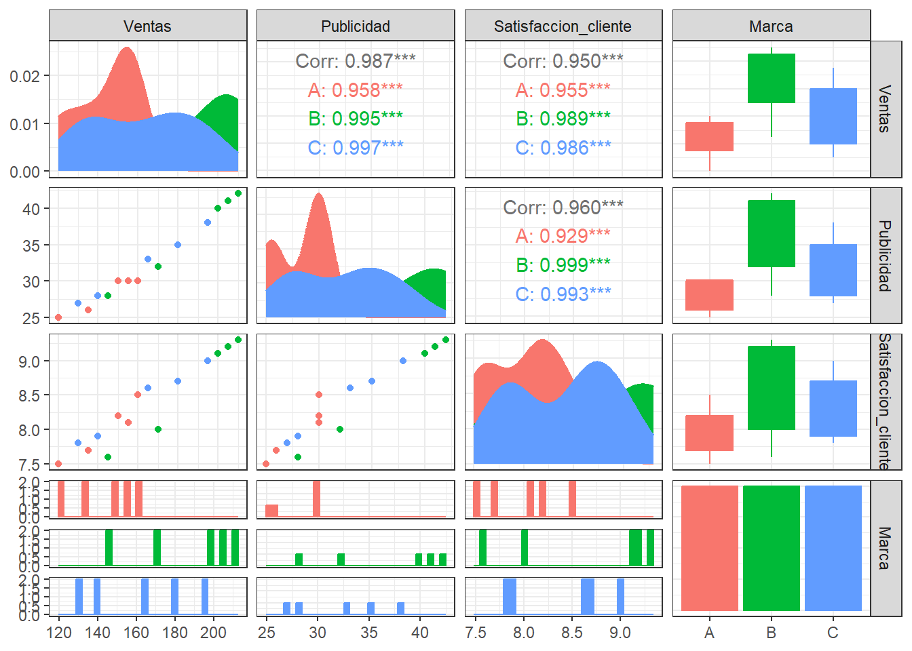
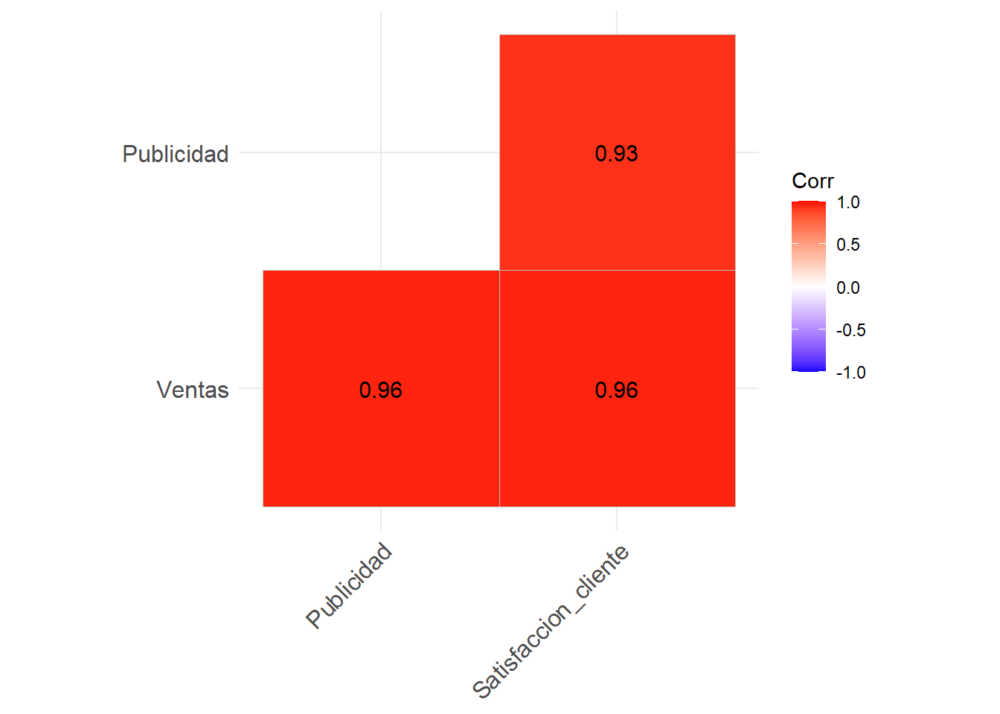
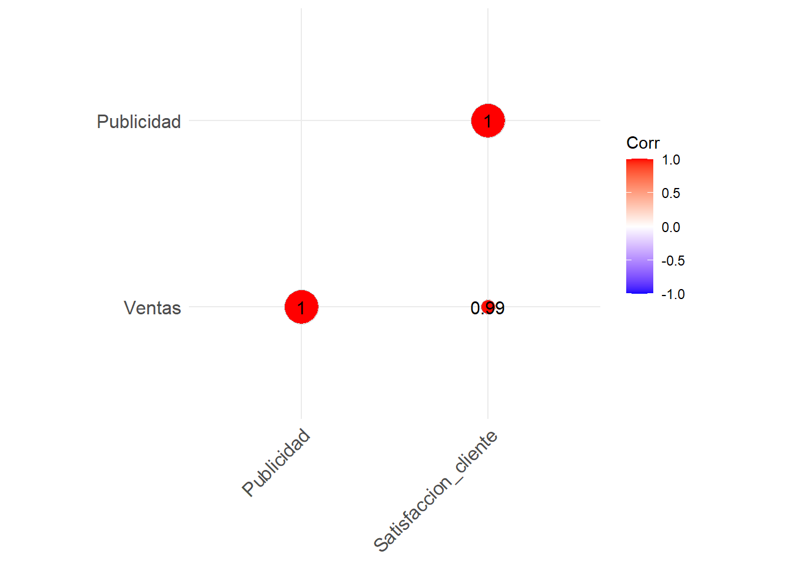
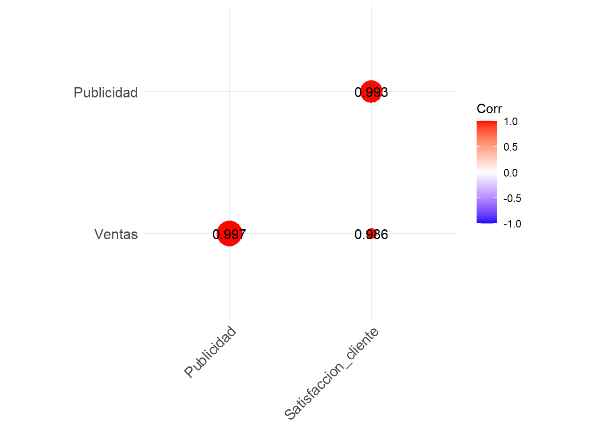

# A tibble: 30 × 5
Producto Ventas Publicidad Satisfaccion_cliente Marca
<dbl> <dbl> <dbl> <dbl> <chr>
1 1 150 30 8.2 A
2 2 200 40 9.1 B
3 3 180 35 8.7 C
4 4 120 25 7.5 A
5 5 170 32 8 B
6 6 140 28 7.9 C
7 7 160 30 8.5 A
8 8 210 42 9.3 B
9 9 130 27 7.8 C
10 10 155 30 8.1 A
# ℹ 20 more rowsEjercicios de estadística descriptiva multivariante
20582- Análisis de Datos para el GMAT
Dídac Capó Peña:
Enunciado y datos
Una empresa quiere analizar si existe relación entre las ventas de sus productos, la inversión en publicidad y la satisfacción del cliente. Los datos que corresponden a las ventas han sido registrados en miles de unidades, el gasto en publicidad en miles de euros y la puntuación de satisfacción del cliente en una escala de 1 a 10 para 30 productos, los puedes descargar en el siguiente enlace: datos empresa
Visualizar y leer los datos:
Apartado 1
Organiza el conjunto de datos en una matriz, donde cada fila corresponda a un producto y cada columna a una variable, siendo la variable “Producto” únicamente un identificador. A continuación, presenta la matriz de dispersión entre las variables, utilizando puntos coloreados según el tipo de marca (consulta la sección 2.4.2 de los apuntes). Comenta los resultados obtenidos, prestando especial atención a lo que indican los valores de las correlaciones entre las variables.
Respuesta
Nuestra matriz de datos, que llamaremos \(X\), es la siguiente:
# A tibble: 30 × 4
Ventas Publicidad Satisfaccion_cliente Marca
<dbl> <dbl> <dbl> <chr>
1 150 30 8.2 A
2 200 40 9.1 B
3 180 35 8.7 C
4 120 25 7.5 A
5 170 32 8 B
6 140 28 7.9 C
7 160 30 8.5 A
8 210 42 9.3 B
9 130 27 7.8 C
10 155 30 8.1 A
# ℹ 20 more rowsLa Matriz de dispersión entre las variables es la siguiente. Hemos utilizado distinción en colores segun el tipo de marca.
a <- X %>%
na.omit()
a$Marca <- as.factor(a$Marca)
ggpairs(a,
aes(color = Marca, fill = Marca)) +
theme_bw() 
En las \(\textbf{Celdas de la Diagonal Principal}\) encontramos la distribución por Marca (A, B, C) de cada variable de forma individual. Los gráficos de densidad indican cómo se distribuyen los valores para cada grupo (Marca A, Marca B, Marca C). Las áreas en diferentes colores (rojo para Marca A, azul para Marca B y verde para Marca C) nos dan una idea de la dispersión y concentración de los valores. Las variables categóricas, como “Marca”, se muestran como diagramas de barras, donde vemos que hay la misma cantidad de cada tipo.
En las \(\textbf{Celdas Inferiores}\) se muestran gráficos de dispersión para cada par de variables cuantitativas. Los puntos están coloreados según la variable Marca, lo cual permite observar visualmente si las tres marcas se comportan de manera diferente en términos de correlación. Por ejemplo: La celda que relaciona Ventas y Publicidad muestra cómo se comportan estas variables, y podemos notar una tendencia clara creciente, lo cual sugiere una fuerte correlación positiva.
En las \(\textbf{Celdas Superiores}\) tenemos el coeficiente de correlación entre los pares de variables cuantitativas. Los coeficientes de correlación están coloreados y desglosados por cada marca (A, B, C). Los números indican el valor de la correlación entre las variables. En los tres casos la correlación es \(>0\), por lo tanto, para todo par de variables \(X\) e \(Y\) las correlaciones son positivas. Podemos concluir que si \(x_i > x_j\), entonces \(y_i\) tiende a ser más grande que \(y_j\).
En las \(\textbf{Celdas con Boxplots y Diagramas de Barras}\) se está relacionando una variable continua con la categórica (Marca). Estas celdas, que están relacionadas con la variable Marca, contienen diagramas de caja (boxplots) o diagramas de barras. Los boxplots permiten visualizar la mediana, los cuartiles y los posibles valores atípicos (outliers) para cada variable continua (Ventas, Publicidad, Satisfacción_cliente) en relación con cada Marca (A, B, C). Vemos que, para las tres variables cuantitativas, los elementos de la Marca B tienden a tener mayor mediana.
Apartado 2
Calcula la matriz de datos centrada y el vector de medias con las formas matriciales estudiada en clase de teoría. Interpreta el vector de medias en el contexto del problema.
Respuesta
El vector de medias, para las variables cuantitativas, és el siguiente:
X_q <- X %>% select(-4)
X_q <- as.matrix(X_q)
x_barra = colMeans(X_q)\(\overline{x} = (164, 32.33, 8.35)\)
Tambien podemos obtener el mismo vector aplicando \(\overline{x}^T = \frac{1}{n}1^TX\)
n=30
unos <- rep(1, n)
x_barra2 = (1/n) * unos %*% X_qEl resultado es el mismo.
La media de las ventas es de \(164\) miles de unidades, la media del gasto en publicidad es de \(32.33\) miles de euros y la media de la puntuación de satisfacción del cliente es de \(8.35\).
Ahora calculemos la matriz de datos centrados de dos maneras distintas, ya que \(\tilde{X}= X - 1\overline{x}^T = HX\)
X_tilde = X_q - unos %*% x_barra2
X_tilde Ventas Publicidad Satisfaccion_cliente
[1,] -14 -2.3333333 -0.1466667
[2,] 36 7.6666667 0.7533333
[3,] 16 2.6666667 0.3533333
[4,] -44 -7.3333333 -0.8466667
[5,] 6 -0.3333333 -0.3466667
[6,] -24 -4.3333333 -0.4466667
[7,] -4 -2.3333333 0.1533333
[8,] 46 9.6666667 0.9533333
[9,] -34 -5.3333333 -0.5466667
[10,] -9 -2.3333333 -0.2466667
[11,] -19 -4.3333333 -0.7466667
[12,] 31 5.6666667 0.6533333
[13,] -29 -6.3333333 -0.6466667
[14,] 41 8.6666667 0.8533333
[15,] 1 0.6666667 0.2533333
[16,] -14 -2.3333333 -0.1466667
[17,] 36 7.6666667 0.7533333
[18,] 16 2.6666667 0.3533333
[19,] -44 -7.3333333 -0.8466667
[20,] 6 -0.3333333 -0.3466667
[21,] -24 -4.3333333 -0.4466667
[22,] -4 -2.3333333 0.1533333
[23,] 46 9.6666667 0.9533333
[24,] -34 -5.3333333 -0.5466667
[25,] -9 -2.3333333 -0.2466667
[26,] -19 -4.3333333 -0.7466667
[27,] 31 5.6666667 0.6533333
[28,] -29 -6.3333333 -0.6466667
[29,] 41 8.6666667 0.8533333
[30,] 1 0.6666667 0.2533333H <- diag(30) - matrix(1/n, nrow = 30, ncol = 30)
X_tilde1 = H%*% X_q
X_tilde1 Ventas Publicidad Satisfaccion_cliente
[1,] -14 -2.3333333 -0.1466667
[2,] 36 7.6666667 0.7533333
[3,] 16 2.6666667 0.3533333
[4,] -44 -7.3333333 -0.8466667
[5,] 6 -0.3333333 -0.3466667
[6,] -24 -4.3333333 -0.4466667
[7,] -4 -2.3333333 0.1533333
[8,] 46 9.6666667 0.9533333
[9,] -34 -5.3333333 -0.5466667
[10,] -9 -2.3333333 -0.2466667
[11,] -19 -4.3333333 -0.7466667
[12,] 31 5.6666667 0.6533333
[13,] -29 -6.3333333 -0.6466667
[14,] 41 8.6666667 0.8533333
[15,] 1 0.6666667 0.2533333
[16,] -14 -2.3333333 -0.1466667
[17,] 36 7.6666667 0.7533333
[18,] 16 2.6666667 0.3533333
[19,] -44 -7.3333333 -0.8466667
[20,] 6 -0.3333333 -0.3466667
[21,] -24 -4.3333333 -0.4466667
[22,] -4 -2.3333333 0.1533333
[23,] 46 9.6666667 0.9533333
[24,] -34 -5.3333333 -0.5466667
[25,] -9 -2.3333333 -0.2466667
[26,] -19 -4.3333333 -0.7466667
[27,] 31 5.6666667 0.6533333
[28,] -29 -6.3333333 -0.6466667
[29,] 41 8.6666667 0.8533333
[30,] 1 0.6666667 0.2533333En los dos casos obtenemos lo mismo
Apartado 3
Calcula la matriz de covarianzas y la matriz de correlaciones utilizando las formas matriciales vistas en la clase de teoría. A continuación, interpreta los resultados obtenidos para ambas matrices en el contexto del problema.
Respuesta
Calculemos primero la matriz de covarianzas, \(S = \frac{1}{n} X^THX\)
X_transpuesta <- t(X_q)
S = (1/n) * X_transpuesta %*% H %*% X_q
S Ventas Publicidad Satisfaccion_cliente
Ventas 767.33333 148.666667 15.5466667
Publicidad 148.66667 29.555556 3.0844444
Satisfaccion_cliente 15.54667 3.084444 0.3491556Revisemos que hemos obtenido bien los datos con la función cov. Recordemos que tenemos que multiplicar por \(\frac{n-1}{n}\) para obtener la matriz de covarianzas a secas en lugar de la muestral,
(n-1)/n*cov(X_q) Ventas Publicidad Satisfaccion_cliente
Ventas 767.33333 148.666667 15.5466667
Publicidad 148.66667 29.555556 3.0844444
Satisfaccion_cliente 15.54667 3.084444 0.3491556Vemos que coinciden.
Notemos que todas las covarianzas son positivas, \(S_{X,Y} > 0\), podemos concluir que si \(x_i > x_j\) entonces \(y_i\) tiende a ser más grande que \(y_j\).
Calculemos ahora la matriz de correlaciones, \(R= D^{-1}SD^{-1}\):
Definimos \(D\) como la matriz diagonal con las varianzas en la diagonal.
diagonal <- diag(S)
diagonal <- sqrt(diagonal)
D <- diag(diagonal)
D_inversa <- solve(D)
R = D_inversa %*% S %*% D_inversa
R [,1] [,2] [,3]
[1,] 1.0000000 0.9871929 0.9498079
[2,] 0.9871929 1.0000000 0.9601695
[3,] 0.9498079 0.9601695 1.0000000Revisemos que hemos obtenido bien los datos con la función cor.
cor(X_q) Ventas Publicidad Satisfaccion_cliente
Ventas 1.0000000 0.9871929 0.9498079
Publicidad 0.9871929 1.0000000 0.9601695
Satisfaccion_cliente 0.9498079 0.9601695 1.0000000Vemos que coinciden.
Notemos que todas las correlaciones son positivas, \(R_{X,Y} > 0\), podemos concluir que si \(x_i > x_j\) entonces \(y_i\) tiende a ser más grande que \(y_j\).
Apartado 4
Calcula la matriz de correlaciones muestrales con la forma matricial estudiada en clase de teoría y revisa que lo has hecho bien con la función disponible de R. Interpreta los resultados obtenidos.
Respuesta
Todo realizado en el apartado anterior.
Apartado 5
Calcula la varianza generalizada y la variación total del conjunto de datos numéricos que estamos estudiando. Interpreta los resultados obtenidos.
Respuesta
Las definiciones de varianza generalizada y variación total són las siguientes,repectivamente:
\[|S| = \prod_i^p \lambda_i\] \[Tr(S)= \sum_i^p \lambda_i\] donde los \(\lambda_i\) són los valores propios de la matriz de covarianzas \(S\). Saquemos los valores propios de \(S\):
valores_propios <- eigen(S)$values
valores_propios[1] 796.47946744 0.73162695 0.02695006Por tanto, la varianza generalizada es:
prod(valores_propios)[1] 15.70449Y, la variación total:
sum(valores_propios)[1] 797.238La variación total representa la dispersión individual de las variables. Es decir, mide cuánto varía cada variable sin considerar las relaciones entre ellas(ignora las covarianzas). Mientras que la varianza generalizada mide la variabilidad conjunta de las variables, es decir, cuánto varían las variables juntas. En este caso, la varianza generalizada es 15.7 y la variación total 797.24. Esto indica que las tres variables tienen una cantidad significativa de variación individual(como refleja la variación total), però estan fuertemente correlacionadas entre sí, lo que reduce la dispersión conjunta. Esto podria implicar que hay redundancia entre las variables: aunque parecen variar de manera considerable por separado, mucha de esa variación se debe a relaciones communes entre variables. Por ejemplo , tanto las ventas como la satisfacción del cliente podrían depender fuertemnete de la publicidad, haciendo que sus variaciones esten alineadas.
Apartado 6
Calcula los vectores de medias y las matrices de correlacioes muestrales para cada marca de productos utilizando las funciones que están disponibles en R y tidyverse. Comenta los resultados obtenidos.
Respuesta
Empezemos con el vector de medias:
medias <- data_analisis2 %>%
group_by(Marca) %>%
summarise(
Ventas_media = mean(Ventas),
Publicidad_media = mean(Publicidad),
Satisfaccion_cliente_media= mean(Satisfaccion_cliente)
)
medias# A tibble: 3 × 4
Marca Ventas_media Publicidad_media Satisfaccion_cliente_media
<chr> <dbl> <dbl> <dbl>
1 A 144 28.2 8
2 B 186 36.6 8.64
3 C 162 32.2 8.4 Viendo los resultados de las medias en la tabla podemos hacer las siguientes observaciones:
Ventas media:
La Marca B tiene las mayores ventas (186), mientras que la Marca A tiene las menores (144). Esto sugiere que la Marca B podría tener un mejor rendimiento en el mercado en términos de ventas en comparación con las otras dos marcas. La Marca C ocupa un lugar intermedio con 162.
Publicidad media:
La inversión en Publicidad sigue una tendencia similar a la de las ventas. La Marca B nuevamente es la que más gasta en publicidad, con un valor promedio de 36.6. La Marca A es la que menos invierte (28.2), mientras que la Marca C se encuentra entre ambas con un gasto promedio de 32.2.
Satisfacción del cliente media:
En términos de Satisfacción del cliente, la Marca B también lidera con un valor promedio de 8.64, seguida de cerca por la Marca C con 8.40. La Marca A tiene el valor más bajo de satisfacción (8.00).
Comentarios Generales:
Parece que la Marca B es la que mejor se posiciona en todos los aspectos: tiene las mayores ventas, la mayor inversión en publicidad y también la mayor satisfacción del cliente. Esto podría sugerir que su estrategia de mayor inversión en publicidad está correlacionada positivamente tanto con las ventas como con la satisfacción del cliente.
La Marca A parece estar en una situación más desfavorable en comparación con las otras dos marcas, mostrando menores niveles de ventas, menor inversión en publicidad y una menor satisfacción del cliente.
La Marca C ocupa una posición intermedia, con niveles de ventas, publicidad y satisfacción del cliente por debajo de la Marca B, pero mejores que los de la Marca A.
Finalmente, calculemos la matriz de correlaciones:
correlaciones <- data_analisis2 %>%
group_by(Marca) %>%
group_map(~ cor(.x %>% select(Ventas, Publicidad, Satisfaccion_cliente)))
correlaciones[[1]]
Ventas Publicidad Satisfaccion_cliente
Ventas 1.0000000 0.9576501 0.9553404
Publicidad 0.9576501 1.0000000 0.9287223
Satisfaccion_cliente 0.9553404 0.9287223 1.0000000
[[2]]
Ventas Publicidad Satisfaccion_cliente
Ventas 1.0000000 0.9952718 0.9889125
Publicidad 0.9952718 1.0000000 0.9985800
Satisfaccion_cliente 0.9889125 0.9985800 1.0000000
[[3]]
Ventas Publicidad Satisfaccion_cliente
Ventas 1.0000000 0.9974114 0.9864109
Publicidad 0.9974114 1.0000000 0.9926943
Satisfaccion_cliente 0.9864109 0.9926943 1.0000000En todos los casos las correlaciones entre pares de variables haciendo la separación por marcas dan positivo, entonces tenemos que para cada par de variables \(X\) e \(Y\) si \(x_i > x_j\) entonces \(y_i\) tiende a ser más grande que \(y_j\)
Apartado 7
Utiliza la librería ggcorrplot para visualizar las matrices de correlaciones para cada marca de productos mediante mapas de calor que muestren solo las matrices triangulares inferiores. Para la marca A presenta los resultados con method = "square", para las marca B con method = "circle" y, para la marca C con method = "circle" pero especificando tres cifras decimales. Comenta los resultados obtenidos e indica cuál de los métodos te parece más apropiado para interpretar estos datos.
Respuesta
# Filtrar por cada marca y seleccionar las variables cuantitativas
data_A <- data_analisis2 %>% filter(Marca == "A") %>% select(Ventas, Publicidad, Satisfaccion_cliente)
data_B <- data_analisis2 %>% filter(Marca == "B") %>% select(Ventas, Publicidad, Satisfaccion_cliente)
data_C <- data_analisis2 %>% filter(Marca == "C") %>% select(Ventas, Publicidad, Satisfaccion_cliente)
# Calcular las matrices de correlación
cor_A <- cor(data_A)
cor_B <- cor(data_B)
cor_C <- cor(data_C)Marca A:
ggcorrplot(cor_A, method = "square", type = "lower", lab = TRUE)
Marca B:
ggcorrplot(cor_B, method = "circle", type = "lower", lab = TRUE)
Marca C:
ggcorrplot(cor_C, method = "circle", type = "lower", lab = TRUE, lab_size = 4, digits = 3)
El método “square” aplicado a la Marca A, es adecuado cuando nos interesa principalmente la precisión numérica y comparar fácilmente las magnitudes de las correlaciones, ya que los cuadros proporcionan una comparación directa y rápida.
El método “circle” aplicado a las Marcas B y C, es adecuado si valoras la visualización estética y la interpretación gráfica intuitiva de la magnitud de las correlaciones. Sin embargo, su uso podría ser menos adecuado si las correlaciones son muy similares, ya que el tamaño de los círculos puede ser difícil de diferenciar en esos casos.
En el caso de la Marca C, mostrar tres decimales proporciona mayor precisión, lo que puede ser útil cuando necesitas un análisis más detallado de las correlaciones. Si las diferencias entre las correlaciones son pequeñas, este ajuste es importante para hacer un análisis más fino.